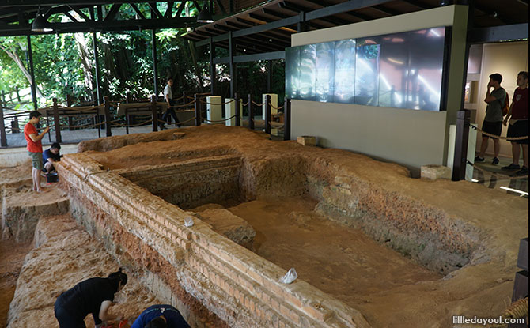

Keramat Iskandar Shah is commonly believed to be the final resting ground of Sultan Iskandar Shah. Originally a Hindu who went by the name of Parameswara, he converted to Islam and adopted this name when he married a Princess of Pasai in Malacca. Sultan Iskandar Shah is portrayed as the last of the five kings to rule over Singapore in the 14th century and also the descendent of Sang Nila Utama, who we all know as the founder of Singapura

Artisan's Garden garden used to be the workshop and living quarters of the craftsmen in the 14th century. Currently, this space is one of the last archaeological dig sites that has been retained in Singapore.

This is me against the lush backdrop, thinking about the rich history of this place :)
Location
Click the button to find out how to get there.